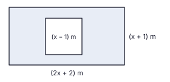

Pavithra, the owner of a supermarket, plans to buy a refrigerator priced at Rs 60 000. She has two options. Option 1: take a bank loan of Rs 60 000 for 10 months at a simple interest rate of 18% per year, and settle the loan and the interest in one payment at the end of the 10 months. Option 2: buy it on 10 equal monthly instalments of Rs 6 550 each. Under this option, Rs 6 000 of the price is repaid every month, and the interest for each month is calculated on the balance owed at the beginning of that month.
An incomplete table of values for the function y = f(x) for 0 ≤ x ≤ 8 is given below. The graph of the function is symmetrical about a vertical line.
| x | 0 | 1 | 2 | 3 | 4 | 5 | 6 | 7 | 8 |
|---|---|---|---|---|---|---|---|---|---|
| y | −7 | 0 | 5 | 8 | 9 | … | 5 | 0 | −7 |
(b) Using these, write the function in the form y = −(x + p)(x + q).
The figure shows the cross-section of a slope in the grounds of a hospital. A, B and E are on level ground, with B between A and E. The straight path AC rises with ∠CAB = 35° and AC = 40 m. BCD is a vertical line, DC = BC, and a cable DE runs down to E, with BE = 36 m. Copy the figure on your answer sheet and mark the given data on it. (Use the trigonometric tables.)

Asanka's paddy field is a rectangle of length (2x + 2) m and width (x + 1) m. A square pond of side (x − 1) m has been dug inside it. The remaining shaded part of the field has an area of 100 m2.

Gayan bought 80 packs of detergent for his supermarket, some small packs at Rs 95 each and some large packs at Rs 150 each, for a total of Rs 9 250. Let the number of small packs be x and the number of large packs be y.
Thilini, a nurse at a hospital clinic, recorded the number of patients treated at the clinic on each of 40 days. The data are given in the table.
| Number of patients per day | 15–24 | 25–34 | 35–44 | 45–54 | 55–64 |
|---|---|---|---|---|---|
| Number of days | 4 | 9 | 14 | 9 | 4 |